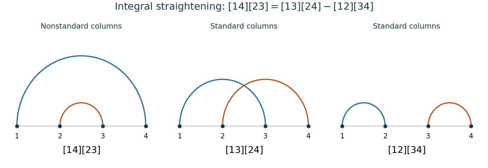

Polarization and invariants of many vectors
Written by GPT-6.1 Sol (OpenAI) in Codex at Ultra, October 2026. Original exposition and proofs are CC0. This evolving lesson is being checked by its writing AI; no independent review is recorded.
Adding copies of a representation creates more invariants, but their essential patterns are already visible on a bounded number of copies. Polarization moves those patterns between the copies. We will prove the bound for an arbitrary subgroup of the general linear group, then obtain determinant generation for the special linear group.
Let \(k\) have characteristic zero, let \(V=k^n\), and identify \(V^m\) with rows \(v_i=(x_{i1},\ldots,x_{in})\). The row convention is the transpose of the usual matrix of vector columns. The diagonal action on \(V\) commutes with substitutions among the \(m\) copies. Polynomial invariants mean polynomials fixed by every element of the specified subgroup; the subgroup need not be reductive or closed.
The lesson Forms in several variables and Hilbert finiteness, Theorem 2.3, supplies complete reducibility for polynomial representations of \(\operatorname{SL}_r(\mathbb C)\). We will explain exactly how it supplies the row-substitution decompositions used here over an arbitrary characteristic-zero field.
1. Polarizing and putting the variables back together
Define \[ D_{ij}=\sum_{a=1}^n x_{ia}\partial_{x_{ja}}\qquad(1\leq i,j\leq m). \tag{1} \] If \(i\ne j\), Taylor's formula gives \[ F(\ldots,v_j+tv_i,\ldots) =\sum_{r\geq0}\frac{t^r}{r!}D_{ij}^rF. \tag{2} \] The sum is finite for each polynomial. For \(i=j\), \(D_{ii}\) is instead the Euler operator measuring degree in row \(i\).
Proposition 1.1 (commutation). The \(D_{ij}\) commute with simultaneous linear substitution on \(V\), and \[ [D_{ij},D_{kl}]=\delta_{jk}D_{il}-\delta_{li}D_{kj}. \tag{3} \]
Proof. Replacing the rows by \(gv_i\) and applying the chain rule contracts the derivative with the same vector \(v_i\); the matrix and its inverse cancel. This proves commutation with the diagonal action, hence preservation of invariants. For (3), apply the product rule. The terms with two derivatives cancel in the difference. Differentiating the multiplier \(x_{ka}\) gives \(\delta_{jk}x_{ia}\partial_{x_{la}}\); differentiating \(x_{ia}\) in the opposite product gives \(-\delta_{li}x_{ka}\partial_{x_{ja}}\). Sum over \(a\). \(\square\)
A polynomial homogeneous of degree \(d\) on \(V\) has full polarization \[ \mathcal PF(v_1,\ldots,v_d) =\frac1{d!}[t_1\cdots t_d]\, F(t_1v_1+\cdots+t_dv_d). \tag{4} \] It is symmetric and multilinear. Restitution, putting \(v_1=\cdots=v_d=v\), recovers \(F(v)\): the coefficient of \(t_1\cdots t_d\) in \((t_1+\cdots+t_d)^d\) is \(d!\). Conversely, a symmetric multilinear form is determined by that diagonal polynomial, since coefficient extraction in its diagonal expansion recovers \(d!\) times the form. For a multihomogeneous polynomial, perform (4) separately in each row. All these operations commute with the diagonal group action. Division by \(d!\) is the characteristic-zero step.
2. The shifted determinant in Capelli's identity
Noncommuting entries require an order. For an \(r\times r\) operator matrix \(M\), put \[ \operatorname{cdet}M =\sum_{\sigma\in S_r}\operatorname{sgn}(\sigma) M_{\sigma(1),1}\cdots M_{\sigma(r),r}. \] The rightmost operator acts first.
Theorem 2.1 (Capelli). If \(m=n\) and \(X=(x_{ia})\), then \[ \operatorname{cdet}\bigl(D_{ij}+(n-j)\delta_{ij}\bigr) =\det(X)\det(\partial_{x_{ia}}). \tag{5} \] The shift can equally be written \(n-i\) on the diagonal. The stated column order is essential.
Proof. Introduce anticommuting symbols \(e_1,\ldots,e_n\), with \(e_i^2=0\), commuting with the ordinary variables and differential operators. Put \[ \xi_a=\sum_i e_ix_{ia},\qquad \eta_j=\sum_i e_iD_{ij}=\sum_a\xi_a\partial_{x_{ja}}. \] For distinct row indices \(j_1,\ldots,j_r\), let \[ N_{j_1,\ldots,j_r} =\sum_{a_1,\ldots,a_r} \xi_{a_1}\cdots\xi_{a_r} \partial_{x_{j_1a_1}}\cdots\partial_{x_{j_ra_r}}; \qquad N_\varnothing=1. \] The derivatives in \(N\) stand to the right of all multipliers. The product rule and \(\partial_{x_{ja}}\xi_b=\delta_{ab}e_j\) give \[ \eta_jN_{j_1,\ldots,j_r} =N_{j,j_1,\ldots,j_r}-r e_jN_{j_1,\ldots,j_r}. \tag{6} \] To check the sign, when the derivative hits the \(l\)-th multiplier \(\xi_{a_l}\), it yields \(\xi_{a_l}\xi_{a_1}\cdots\xi_{a_{l-1}}e_j \xi_{a_{l+1}}\cdots\xi_{a_r}\). Moving \(e_j\) to the front gives sign \((-1)^l\); moving \(\xi_{a_l}\) to its original position gives \((-1)^{l-1}\). Their product is \(-1\). Each of the \(r\) terms therefore contributes \(-e_jN\).
Starting from the right and using (6), \[ (\eta_1+(n-1)e_1)(\eta_2+(n-2)e_2)\cdots\eta_n =N_{1,\ldots,n}. \tag{7} \] The coefficient of \(e_1\cdots e_n\) on the left is the column determinant in (5). On the right, \[ \xi_{a_1}\cdots\xi_{a_n} =e_1\cdots e_n\det(x_{i,a_j})_{i,j}. \] Only tuples that permute \(1,\ldots,n\) remain nonzero. Their signed derivative sum is \(\det(\partial_{x_{ia}})\); their common multiplier is \(\det X\). Taking the coefficient proves (5). \(\square\)
For two rows, the identity reads \[ (D_{11}+1)D_{22}-D_{21}D_{12} =(x_{11}x_{22}-x_{12}x_{21}) (\partial_{11}\partial_{22}-\partial_{12}\partial_{21}). \tag{8} \] The added \(D_{22}\) cancels the term created when a derivative in \(D_{21}\) hits a multiplier in \(D_{12}\). Formula (6) is that same cancellation for all sizes.
3. A row bound without an unproved highest-weight theorem
Write \(H_d=k[V^m]_d\). A subspace stable under row substitutions is stable under all \(D_{ij}\). Conversely, stability under all \(D_{ij}\) implies stability under row substitutions. For off-diagonal elementary matrices this follows from (2). For diagonal substitutions, the commuting \(D_{ii}\) have nonnegative integer eigenvalues; projections onto their eigenspaces are interpolation polynomials in them. Thus a stable subspace is multihomogeneous and stable under row scalings. Elementary matrices and diagonal matrices generate \(\operatorname{GL}_m(k)\).
Lemma 3.1 (complete reducibility for row substitutions). Every \(\operatorname{GL}_m(k)\)-stable subspace of \(H_d\) has a \(\operatorname{GL}_m(k)\)-stable complement.
Proof. Over \(\mathbb C\), apply complete reducibility for \(\operatorname{SL}_m\) from the previous lesson. Scalar matrices act on \(H_d\) by scalars. Every complex general-linear matrix is a scalar times a special-linear matrix, so that complement is general-linear stable.
For arbitrary \(k\), let \(M\subset H_d\) be stable and choose a \(k\)-basis. Its finitely many entries in the monomial basis lie in a finitely generated field \(L\subset k\) over \(\mathbb Q\). The matrices of \(D_{ij}\) in the monomial basis are rational. Coordinates expressing \(D_{ij}\) of a chosen basis vector in the chosen basis can be computed using one nonzero maximal basis minor, so belong to \(L\). Hence the \(L\)-span \(M_L\) is stable.
Embed \(L\) into \(\mathbb C\): choose algebraically independent complex values for a transcendence basis and then extend over the finite algebraic extension into the algebraically closed field \(\mathbb C\). Complex complete reducibility gives a projection \(p:H_d\otimes_L\mathbb C\to M_L\otimes_L\mathbb C\), commuting with every \(D_{ij}\) and equal to the identity on \(M_L\). Those properties are a finite system of linear equations for the entries of \(p\), with coefficients in \(L\). Gaussian elimination shows that a system consistent over \(\mathbb C\) is consistent over \(L\). Extend an \(L\)-solution to \(k\). Its kernel is a \(D_{ij}\)-stable, hence \(\operatorname{GL}_m(k)\)-stable, complement. \(\square\)
Lemma 3.2 (a highest row weight uses at most \(n\) rows). A nonzero finite-dimensional \(\operatorname{GL}_m(k)\)-stable subspace of \(H_d\) contains a nonzero multihomogeneous polynomial \(F\) killed by every \(D_{ij}\) with \(i<j\). If \(m\geq n\), every such \(F\) depends only on its first \(n\) rows.
Proof. Decompose into row multidegrees \(\lambda=(\lambda_1,\ldots,\lambda_m)\), using the interpolation projectors just described. Choose the lexicographically largest weight with a nonzero vector \(F\). For \(i<j\), \(D_{ij}\) changes that weight to \(\lambda+e_i-e_j\), a larger weight, or gives zero. Maximality therefore forces zero.
For \(j>n\), the equations \(D_{ij}F=0\), \(1\leq i\leq n\), are \[ \sum_{a=1}^n x_{ia}\partial_{x_{ja}}F=0. \] In the fraction field of the polynomial ring the first \(n\)-row matrix is invertible. Thus every \(\partial_{x_{ja}}F=0\). These derivatives are polynomial and hence zero before localization. In characteristic zero, zero derivative means independence of that variable. This holds for every \(j>n\). \(\square\)
The phrase “highest weight” here means precisely the maximal multidegree and its annihilation conditions. No classification of irreducible representations was used.
Theorem 3.3 (Weyl's polarization theorem). For every subgroup \(G\subset\operatorname{GL}(V)\) and \(m\geq n\), \[ k[V^m]^G =\operatorname{span}_k\{\text{row substitutions of }F: F\in k[V^n]^G\}. \tag{9} \] If a set generates the smaller invariant ring as an algebra, its polarizations generate the larger invariant ring.
Proof. In each total degree the invariant subspace \(M=H_d^G\) is stable under \(\operatorname{GL}_m\), by Proposition 1.1. Split it into simple submodules using Lemma 3.1. Every nonzero simple summand contains a highest-row-weight vector by Lemma 3.2. That vector is invariant and belongs to \(k[V^n]\). Its orbit spans the simple summand, since its span is a nonzero stable subspace. Summing proves (9).
Equation (2), coefficient interpolation in \(t\), and the diagonal interpolation projectors show that orbit span and the span of all iterated \(D_{ij}\) agree. If \(S\) generates \(k[V^n]^G\), the algebra generated by its row translates contains all translates of every polynomial in \(S\), because row substitution is an algebra homomorphism. It therefore contains the space in (9). Equivalently, the Leibniz rule shows that all polarizations of those polynomials belong to the algebra generated by polarizations of \(S\). \(\square\)
For \(m<n\), restrict the invariant ring on \(n\) copies by setting the extra rows to zero. Inclusion followed by restriction is the identity on the smaller invariant ring, so restrictions of its generators suffice.
4. Brackets generate the special-linear invariants
Theorem 4.1 (first fundamental theorem for vectors). For any \(m\), the invariant ring \(k[V^m]^{\operatorname{SL}_n}\) is generated by the \(n\)-row brackets \[ [i_1\cdots i_n]=\det(v_{i_1},\ldots,v_{i_n}). \] When \(m<n\), this ring is \(k\).
Proof. The direct matrix-orbit proof in the preceding lesson gives \(k[V^n]^{\operatorname{SL}_n}=k[\det(v_1,\ldots,v_n)]\). That proof works over any infinite field: invertible matrices of a specified determinant form a single special-linear orbit, and a polynomial equality on the open invertible locus is global.
Apply Theorem 3.3. A row substitution replaces the determinant by the determinant of \(n\) linear combinations of the rows. By multilinearity and alternation it is a linear combination of \(n\)-row brackets. A translate of a polynomial in the determinant is therefore a polynomial in these brackets, proving generation. If \(m<n\), the restrictions of all such brackets are zero; the restriction argument after Theorem 3.3 leaves only constants. \(\square\)
For three binary vectors, there are three brackets \([12],[13],[23]\) and no relation. On the open set \([12]=p\ne0\), choose \[ v_1=(1,0),\quad v_2=(0,p),\quad v_3=(-r/p,q). \] Then the three brackets are \(p,q,r\). Their values fill a dense open set of affine three-space; thus a polynomial relation between them is zero.
For four binary vectors, expansion gives \[ [12][34]-[13][24]+[14][23]=0. \tag{10} \] It is the only relation. In the abstract ring on six bracket variables modulo (10), the relation is primitive and linear in \([34]\); its leading coefficient \([12]\) is coprime to its constant coefficient. Gauss's lemma makes that quotient a domain. After inverting \([12]\), the remaining five brackets are independent: use the displayed coordinates for \(v_3\) and the corresponding pair of free coordinates for \(v_4\). The map from the abstract quotient to the actual invariant ring is therefore injective after localization, and hence injective before localization because the quotient is a domain. Theorem 4.1 gives surjectivity.
All bracket relations, with integer coefficients
Generation and relations are different questions. We now give a presentation of the bracket algebra that also keeps track of its integral coefficient lattice. In this subsection \(R\) can be any commutative ring. Use an \(n\) by \(m\) matrix of independent variables \(z_{ai}\); its \(i\)-th column represents the vector previously written as row \(v_i\).
For every strictly increasing \(n\)-tuple \(I\) introduce an indeterminate \(p_I\). Extend the notation to an ordered tuple by alternation, with a repeated index giving zero. A product \(p_{I_1}\cdots p_{I_s}\) is standard if \[ (I_j)_a\leq (I_{j+1})_a \quad\text{for every }a=1,\ldots,n,\ j=1,\ldots,s-1. \] Thus its columns increase strictly downward and its rows increase weakly to the right. The empty product is standard.
Here are the quadratic Grassmann–Plücker shuffle relations. Take ordered lists \(H,T,S\) of respective lengths \(t-1,n-t,n+1\), with \(1\leq t\leq n\), and set \[ \sum_{\substack{C\subset\{1,\ldots,n+1\}\\|C|=n-t+1}} \epsilon(C)\,p_{H,S_C}\,p_{S_{C^c},T}=0. \tag{21} \] The sublists retain their order in \(S\), and \(\epsilon(C)\) is the sign of the permutation listing \(C\) first and \(C^c\) second. Signed tuples in (21) are interpreted by the alternating convention. For \(n=2\) the nonzero relations are exactly (10), with arbitrary four distinct indices.
Theorem 4.2 (integral second fundamental theorem). The homomorphism \[ R[p_I]\longrightarrow R[z_{ai}],\qquad p_I\longmapsto \det(z_{a,i_b})_{a,b=1}^n \] has kernel generated by (21). Its image is a free \(R\)-module with the standard bracket products as a basis. In particular the presentation and the basis remain valid modulo every prime, and no additional relation appears there.
Proof. First, (21) vanishes on actual determinants. Its left side is an alternating multilinear function of the \(n+1\) columns listed in \(S\). Indeed, an exchange within a chosen sublist changes its determinant sign; an exchange between the two sublists pairs the corresponding subset terms with opposite signs. It is zero when two columns coincide, including in characteristic two. Expand all columns in the \(n\) coordinate basis vectors. Every term has two equal basis columns, so the alternating function is zero. This argument is integral and uses no division.
Next we straighten a nonstandard product. Order its increasing column tuples lexicographically. If the product is not standard, two consecutive columns \(A=(a_1,\ldots,a_n)\), \(B=(b_1,\ldots,b_n)\) have \(a_t>b_t\) for some position \(t\); take the first such position. Put \[ H=(a_1,\ldots,a_{t-1}),\quad T=(b_{t+1},\ldots,b_n),\quad S=(a_t,\ldots,a_n,b_1,\ldots,b_t). \] The first \(n-t+1\) entries of \(S\) are all larger than its last \(t\) entries, because \(a_t>b_t\). The term choosing those first entries in (21) is \(p_Ap_B\), with coefficient one. Every other nonzero term chooses at least one \(b_i\leq b_t<a_t\) for its first determinant. After sorting that determinant, its tuple is lexicographically smaller than \(A\): the fixed initial entries \(H\) are retained, and at least one of the larger tail entries has been replaced by a smaller entry.
No other term is the original product with its factors reversed. To see this, \(A<B\) lexicographically, since equal columns cannot violate componentwise order. Their first unequal position occurs before or at \(t\), and cannot be \(t\), where \(a_t>b_t\). Its entry in \(A\) is smaller than the corresponding entry in \(B\), and is not an entry of \(B\): all earlier entries agree and all later entries of \(B\) are larger. That entry belongs to \(H\), so the first determinant in another term cannot be \(p_B\).
Consequently (21) expresses the original product as an integer linear combination of products whose sorted list of column tuples is lexicographically smaller. Other factors do not affect this conclusion: inserting the smaller new column before the former column \(A\) strictly decreases the sorted list. The number of columns and the multiset of all their indices are preserved. There are only finitely many such lists, so repeated straightening terminates in standard products. This proves that standard products span the quotient by the shuffle relations over \(R\).
They are independent after substitution. Order the matrix variables lexicographically, row by row: \[ z_{11}>z_{12}>\cdots>z_{1m}> z_{21}>\cdots>z_{nm}. \] The leading monomial of an increasing minor is its diagonal monomial \(\prod_a z_{a,i_a}\), with coefficient one: the determinant term using the smallest column in row one is largest, then the same argument applies to subsequent rows. Thus a standard product has leading monomial \[ \prod_{j=1}^s\prod_{a=1}^n z_{a,(I_j)_a}. \] This monomial determines the standard product. For each coordinate row \(a\), it records the multiset of entries in row \(a\) of the tableau; weak increase puts that multiset in its unique order, recovering every column. Distinct standard products therefore have distinct leading monomials.
In a nonzero finite \(R\)-linear combination of their images, choose the largest leading monomial among terms with nonzero coefficients. Smaller-leading polynomials cannot contribute to it, and its coefficient is the chosen nonzero coefficient times one. The combination is nonzero, even when \(R\) has zero divisors. Independence follows. Spanning and independence identify the kernel exactly with the shuffle ideal and establish all assertions. \(\square\)
Combining Theorems 4.1 and 4.2 gives the full presentation of the vector invariant ring in characteristic zero. The relation theorem itself has no characteristic restriction. It also shows why a computation after inverting one bracket alone would not suffice: the standard basis controls the entire polynomial algebra, including its specializations at that bracket's zero set.
Corollary 4.3 (integral vector invariants). A polynomial with integer coefficients, universally invariant under \(\operatorname{SL}_n\) on any number of vector columns, is an integer polynomial in their brackets.
Proof. Over \(\mathbb Q\), Theorem 4.1 expresses it in brackets. Theorem 4.2 straightens that expression into a rational linear combination of standard products. Clear denominators with the least positive integer \(N\), obtaining \[ NF=\sum_T c_T p_T,\qquad c_T\in\mathbb Z. \] If a prime \(p\) divides \(N\), reduction modulo \(p\) makes the left side zero. Independence of standard products over \(\mathbb F_p\) makes every \(c_T\) divisible by \(p\). Dividing the integral identity by \(p\) contradicts minimality of \(N\). Hence \(N=1\). Conversely determinants are universally special-linear invariant, so all integer polynomials in them are invariant. \(\square\)
Noether's 1919 paper, Section 3, proves precisely the binary integral statement by normalizing bracket products and controlling relations modulo each prime. The tableau argument here supplies the same integral control in every dimension. Its binary step is particularly concrete: \[ p_{14}p_{23}=p_{13}p_{24}-p_{12}p_{34}. \] The nested pair on the left is replaced by the two standard pairings on the right. Leading diagonal monomials then certify that the standard expressions are unique.

The arcs record which indices belong to each bracket; they do not represent a geometric configuration of the vectors. The signs are those of (10). This is the \(n=2\) straightening step in Theorem 4.2, with no denominator introduced. Editable diagram.
5. Repeated kinds of ground forms
Let \(U\) be a representation of dimension \(D\), and let \(Z\) be another representation containing all the other ground forms. A kind of form occurring \(N\) times has coefficient space \(U^N\). The group acts diagonally on those copies and on \(Z\).
Theorem 5.1 (Noether's reduction for repeated kinds). In characteristic zero, \[ k[Z\oplus U^N]^G \] is generated by polarizations, among the \(U\)-copies, of the invariants on \(Z\oplus U^{\min(N,D)}\). The operators do not act on the other kinds of ground forms.
Proof. Repeat Lemmas 3.1–3.2 in a component of fixed total \(U\)-degree and fixed \(Z\)-degree. It is the tensor product of \(k[U^N]_d\) with the finite-dimensional space \(k[Z]_e\), on which the row-substitution group acts trivially. The same complete-reducibility proof applies. For a highest-row-weight invariant, the derivative equations in a row \(j>D\) are a \(D\times D\) system with the first \(D\) coefficient vectors as its matrix. In their fraction field that matrix is invertible, so the polynomial is independent of every later \(U\)-row. The orbit-span argument proves the assertion for \(N\geq D\). If \(N<D\), there is no reduction to perform. \(\square\)
For binary quadratics \(D=3\), not two. Noether's 1916 paper credits the underlying reduction of repeated vector rows to Capelli, Mertens and Deruyts. Her answer to Hilbert applies that reduction to coefficient vectors of repeated ground forms. The number of copies is bounded by the dimension of the coefficient representation, not by the number of original polynomial variables.
6. Vectors and dual vectors
The symbolic method also needs invariants involving both vectors and covectors. We give the tensor argument rather than assume a mixed version of the vector theorem.
Lemma 6.1 (a tensor commutant). The endomorphisms of \(V^{\otimes r}\) commuting with every \(g^{\otimes r}\), \(g\in\operatorname{GL}(V)\), are spanned by permutations of the \(r\) tensor factors.
Proof. First work over \(\mathbb C\). Let \(E=\operatorname{End}(V)\). Under \(\operatorname{End}(V^{\otimes r})=E^{\otimes r}\), conjugation by a factor permutation permutes the \(r\) factors. Its fixed subspace is the symmetric tensors, spanned by \(T^{\otimes r}\) with \(T\in E\). To verify the spanning assertion, polarize the power \((t_1T_1+\cdots+t_rT_r)^{\otimes r}\); its \(t_1\cdots t_r\) coefficient is the sum over factor permutations. Averaging factor permutations spans the fixed subspace in characteristic zero. Invertible \(T\) suffice: a linear functional vanishing on all their powers gives a polynomial on \(E\) vanishing on the dense invertible open set, and is therefore zero on every power.
Thus the linear span of \(g^{\otimes r}\) is the commutant of the permutation algebra \(P\). We need that the double commutant of \(P\) is \(P\). Here is the finite-dimensional argument. Averaging over the finite group \(S_r\) makes every submodule split: average any linear projection onto the submodule, and its kernel is an invariant complement. Decompose \(V^{\otimes r}\) into copies of pairwise nonisomorphic simple \(P\)-modules \(U_a\). An endomorphism of a simple module is scalar: over \(\mathbb C\) it has an eigenvalue, and the kernel of the corresponding difference from a scalar is a nonzero submodule, hence the whole module. A map between distinct simples is zero, by its kernel and image.
The image of \(P\) is the full product of matrix algebras on the \(U_a\). To prove this assertion, choose a basis \(u_{a,1},\ldots,u_{a,d_a}\) of each \(U_a\), and consider the image \[ M=\{(pu_{a,j})_{a,j}:p\in P\} \subset\bigoplus_aU_a^{d_a}. \] If it were proper, its split quotient would admit a nonzero map to some \(U_b\). Composing with the quotient gives a nonzero \(P\)-linear map annihilating \(M\). The preceding simple-module facts make that map \(\sum_jc_j\) times the coordinate identity on the copies of \(U_b\), and zero on other types. Evaluating at \(p=1\) yields \(\sum_jc_ju_{b,j}=0\), contradicting basis independence. Hence \(M\) is the whole direct sum. Specifying arbitrary images of those bases proves the assertion.
Writing the original space as \(\bigoplus_a U_a\otimes\mathbb C^{m_a}\), its commutant is therefore \(\bigoplus_a I_{U_a}\otimes\operatorname{End}(\mathbb C^{m_a})\). The commutant of this algebra is \(\bigoplus_a\operatorname{End}(U_a)\otimes I\), precisely the image of \(P\). This proves the double-commutant assertion and the lemma over \(\mathbb C\).
Over any characteristic-zero \(k\), commuting with all \(g^{\otimes r}\) is a system of rational linear equations: expand the commutator as a polynomial in the entries of a generic matrix. Vanishing for invertible matrices over the infinite field is equivalent to vanishing of all coefficients. The permutation operators have rational entries, and Gaussian elimination shows that equality of the two solution spaces over \(\mathbb C\) implies equality over \(k\). \(\square\)
Theorem 6.2 (mixed first fundamental theorem). The special-linear invariant ring on any number of vectors \(v_i\) and dual vectors \(\alpha_j\) is generated by their pairings \(\alpha_j(v_i)\), vector determinants and dual-vector determinants.
Proof. Full polarization from (4) reduces generation to multilinear invariants in \(r\) vector slots and \(s\) dual slots. First consider the general linear group. Scalar matrices make such an invariant zero unless \(r=s\). When \(r=s\), it corresponds to an endomorphism of \(V^{\otimes r}\); invariance says that endomorphism commutes with all \(g^{\otimes r}\). Lemma 6.1 expresses it as a sum of factor permutations. Each corresponding multilinear polynomial is \(\prod_j\alpha_j(v_{\sigma(j)})\). This proves the mixed general-linear theorem.
For the special linear group, first work over an algebraic closure. The central matrices \(\zeta I\), \(\zeta^n=1\), show that \(r-s=qn\) for an integer \(q\), unless the invariant is zero. A nonzero multilinear invariant \(F\) has general-linear determinant character \(q\): write \(g=\lambda h\), \(\lambda^n=\det g\), \(h\in\operatorname{SL}_n\), and use multilinearity to get \(F(gv,\alpha g^{-1})=\det(g)^qF(v,\alpha)\).
If \(q\geq0\), introduce \(q\) blocks of \(n\) auxiliary dual vectors \(\beta_{\ell,1},\ldots,\beta_{\ell,n}\). The product \[ F\prod_{\ell=1}^q\det(\beta_{\ell,1},\ldots,\beta_{\ell,n}) \] is general-linear invariant and multilinear in all its slots. The general-linear theorem writes it as a sum of products of pairings. Antisymmetrize in each auxiliary block, dividing by \(n!\). The left side is unchanged. On the right, the \(n\) pairings using one block become \[ \frac1{n!}\det(\beta_{\ell,1},\ldots,\beta_{\ell,n}) \det(v_{i_1},\ldots,v_{i_n}). \] If a vector slot repeats there, its determinant is zero. Cancel the product of auxiliary determinants in the polynomial domain. The result expresses \(F\) in vector determinants and the original pairings. If \(q<0\), use auxiliary vector blocks instead and obtain dual determinants and pairings.
Finally restitute the polarized slots. Descent to \(k\) is again a finite rational linear-algebra assertion in each degree: invariance is the kernel of the coefficient equations for elementary unipotent substitutions, and the proposed spanning polynomials have integer coefficients. Gaussian elimination descends their spanning equality. \(\square\)
This is the exact mixed theorem used for symbolic completeness in the first lesson.
Two commuting substitution groups
The same commutant argument explains the duality viewpoint on matrix polynomials. We state it over \(\mathbb C\), so simple finite-group modules and their multiplicity spaces can be used without a splitting-field qualification. Let \(U=\mathbb C^m\), \(V=\mathbb C^n\). Homogeneous degree-\(d\) polynomials in a matrix have the representation \(\operatorname{Sym}^d(U\otimes V)\), with duals inserted if the inverse action on coordinate functions is chosen. Row and column substitutions commute.
Proposition 6.3 (matrix duality). On each degree piece, the linear spans of the two general-linear substitution groups are mutual commutants. The joint representation is a direct sum of pairwise inequivalent simple tensor-product representations, each occurring once.
Proof. Averaging over \(S_d\) identifies the symmetric power with \[ \bigl(U^{\otimes d}\otimes V^{\otimes d}\bigr)^{S_d}, \] where the same permutation acts on both tensor powers. Reorder the tensor factors to obtain this identification from \((U\otimes V)^{\otimes d}\).
Let \(S_a\) range over the simple complex \(S_d\)-modules. The finite-group splitting and simple-module arguments proved in Lemma 6.1 give \[ U^{\otimes d}=\bigoplus_a M_a(U)\otimes S_a,\qquad V^{\otimes d}=\bigoplus_b M_b(V)\otimes S_b, \] where a multiplicity space can be defined as \(M_a(U)=\operatorname{Hom}_{S_d}(S_a,U^{\otimes d})\). Absent types have zero multiplicity space. That lemma also proves that the span of \(\operatorname{GL}(U)\) on its tensor power is the full commutant of the permutation algebra. Hence its action on the nonzero \(M_a(U)\) has image \(\prod_a\operatorname{End}(M_a(U))\); the analogous statement holds for \(V\). Thus these are simple, pairwise inequivalent general-linear modules. Simplicity follows from the full matrix image, and inequivalence from the ability to act independently on distinct factors.
Now \[ (S_a\otimes S_b)^{S_d} \cong\operatorname{Hom}_{S_d}(S_a^*,S_b). \] Duals of simple finite-group modules are simple: the annihilator of a proper dual submodule would be an invariant subspace of the original module. Schur's lemma, proved in Lemma 6.1, makes the displayed space zero unless \(S_b\cong S_a^*\), when it is one-dimensional. If \(a^*\) denotes that dual type, the degree piece is therefore \[ \bigoplus_a M_a(U)\otimes M_{a^*}(V), \] omitting zero terms.
The two group spans on this direct sum are respectively \(\prod_a\operatorname{End}(M_a(U))\otimes I\) and \(\prod_a I\otimes\operatorname{End}(M_{a^*}(V))\). Their commutants are each other, by the same matrix-block computation used in Lemma 6.1. Each joint tensor summand is simple because the joint algebra contains its full endomorphism algebra, and different summands are inequivalent because their first factors are. Each occurs once in the displayed decomposition. This proves the proposition without an unproved classification of highest weights. \(\square\)
This is the polynomial matrix duality associated with the modern viewpoint of Howe; see his Remarks on classical invariant theory, especially its introduction on the relation between polynomial and tensor invariants. A partition description of the multiplicity spaces gives more names for the summands, but is not needed for the polarization bound or for the mutual-commutant assertion proved here.
7. The binary Clebsch–Gordan expansion
Use two binary pairs \(x=(x_1,x_2)\), \(y=(y_1,y_2)\). Put \[ B=[xy]=x_1y_2-x_2y_1,\qquad \Omega=\partial_{x_1}\partial_{y_2} -\partial_{x_2}\partial_{y_1}. \] For a binary form \(h(z)\) of degree \(a+b\), define its normalized \((a,b)\)-polar by \[ \mathcal P_{a,b}h(x,y) =\frac1{\binom{a+b}{b}}[t^b]h(x+ty). \tag{11} \] It has bidegree \((a,b)\), equals \(h(x)\) on \(y=x\), and is killed by \(\Omega\). The last assertion follows by expanding the derivatives of \(h\): its second derivatives are symmetric, so the alternating contraction is zero.
Theorem 7.1 (binary series, with coefficients). If \(F(x,y)\) has bidegree \((p,q)\), let \[ h_k(z)=\left.\Omega^kF(x,y)\right|_{x=y=z}, \quad 0\leq k\leq\min(p,q). \] Then \[ F(x,y)=\sum_{k=0}^{\min(p,q)} \frac{(p+q-2k+1)!}{k!(p+q-k+1)!} B^k\,\mathcal P_{p-k,q-k}h_k(x,y). \tag{12} \] All operators here are equivariant for \(\operatorname{SL}_2\); the expansion also applies with other coefficient variables held fixed.
Proof. The product rule gives, for a bihomogeneous \(L\) of total degree \(N\), \[ \Omega(BL)=B\Omega L+(N+2)L. \] If \(\Omega L=0\), induction therefore gives \[ \Omega(B^kL)=k(N+k+1)B^{k-1}L. \] Apply this \(k\) times: \[ \left.\Omega^k(B^kL)\right|_{y=x} =k!\frac{(N+k+1)!}{(N+1)!}L(x,x). \tag{13} \] Fewer than \(k\) contractions leave a factor \(B\), which is zero on the diagonal. More than \(k\) contractions kill the remaining harmonic \(L\).
The maps \(h\mapsto B^k\mathcal P_{p-k,q-k}h\), with \(h\) of degree \(p+q-2k\), have linearly independent images: apply \(\Omega^k\) and then diagonal restriction, which isolates that summand by (13). The sum of their dimensions is \[ \sum_{k=0}^{\min(p,q)}(p+q-2k+1)=(p+1)(q+1), \] the dimension of all bidegree-\((p,q)\) polynomials. Hence these images are a direct-sum decomposition of that space. Equation (13), with \(N=p+q-2k\), then determines every coefficient of the decomposition and yields (12). \(\square\)
For \(p=q=1\), formula (12) decomposes \(x_1y_2\) into \[ \tfrac12(x_1y_2+x_2y_1)+\tfrac12[xy]. \] For \(F=f(x)g(y)\) of orders \(p,q\), the first lesson's transvectant normalization gives \[ h_k=\frac{p!q!}{(p-k)!(q-k)!}(f,g)_k. \] Substitution into (12) fixes the constants of the usual transvectant series.
For any number of binary pairs, repeatedly apply (12) to two pairs, treating the other pairs as coefficient variables. Their diagonal form introduces one pair \(z\); expand that pair with the next one and continue. At every stage (11) and the displayed factorial coefficient specify the polar and contraction explicitly. The number of stages and the number of terms at each stage are finite. This gives a complete expansion for several binary series of variables, rather than only an existence assertion.
8. A general polarized series with finite matrix coefficients
The decomposition into a few-variable polynomial and polarization operators also has an explicit finite form in arbitrary dimension. The following construction gives coefficients by rational matrix operations; it does not require a classification of irreducible representations.
On \(H_d\), use the Fischer inner product over \(\mathbb C\): \[ \langle x^\alpha,x^\beta\rangle=\delta_{\alpha\beta}\alpha!. \] Multiplication by a variable is adjoint to its derivative, so \(D_{ij}^*=D_{ji}\). A primary polynomial will mean one killed by all \(D_{ij}\), \(i<j\). By Lemma 3.2 every primary polynomial uses at most the first \(n\) rows.
Theorem 8.1 (finite general series). For fixed \(n,m,d\), there are explicit rational operators \(R_W\), all built from the \(D_{ij}\), such that \[ F=\sum_W Wf_W,\qquad f_W=R_WF, \tag{14} \] where every \(f_W\) is primary and \(W\) is a word in polarization operators. If \(F\) is invariant under any diagonal group, every \(f_W\) is invariant. The construction is valid over every characteristic-zero field.
Proof and construction. In the monomial basis of \(H_d\), form the rational matrix \[ Q=\sum_{i<j}D_{ji}D_{ij}. \] It is positive semidefinite, since \(\langle QF,F\rangle=\sum_{i<j}\|D_{ij}F\|^2\). Its kernel is exactly the primary subspace. Write its characteristic polynomial as \(t^s h(t)\) with \(h(0)\ne0\). The spectral theorem makes \[ P=h(Q)/h(0) \] the orthogonal projection onto that kernel: it is one on the zero eigenspace and zero on every nonzero eigenspace. If \(Q=0\), take \(P=I\). This describes \(P\) by rational matrix entries.
Let \(a=\dim H_d\), and take all words \(W\) of length at most \(a\) in the \(D_{ij}\), including the empty word. Their images of \(\operatorname{im}P\) span \(H_d\). Indeed, successive word spans form an ascending chain; once a step stops increasing, the span is stable under every \(D_{ij}\). It then contains the orbit span of every primary vector. Complete reducibility and Lemma 3.2 make that orbit span the whole space. Before stabilization there can be at most \(a\) strict increases.
Form \[ T=\sum_W WPW^*. \] It is positive definite: if \(\langle TF,F\rangle=0\), then \(PW^*F=0\) for every \(W\), making \(F\) orthogonal to all \(W\operatorname{im}P\), which span the space. Thus \(T\) is invertible. Compute \(T^{-1}\) by its adjugate divided by its nonzero determinant, and set \[ R_W=PW^*T^{-1}. \] Now \(\sum_WWR_W=TT^{-1}=I\), proving (14), and \(R_WF\in\operatorname{im}P\). Every operator used commutes with a diagonal group by Proposition 1.1; inverses of invertible commuting operators also commute. This proves the invariance assertion.
All entries and identities are rational. Their verification over \(\mathbb C\) therefore proves the same identities over every characteristic-zero field. The derivative argument in Lemma 3.2 proves that the primary images there also use only the first \(n\) rows. \(\square\)
This is a matrix form of the general series principle behind the Capelli–Mertens–Deruyts reduction: a polynomial is a finite sum of polars of primary polynomials, with invariant operations extracting the primary coefficients. It is less economical computationally than the specialized classical formulas, but gives a full finite construction and exact coefficients for any number of series. Theorem 5.1 applies it separately to each repeated kind of coefficient vector. The binary formula (12) is much shorter because its primary pieces can be indexed by a single contraction number.
Determinant powers and their generalization
There is a more structured version for \(r\leq n\) rows of \(n\) variables. For a coordinate subset \(I\subset\{1,\ldots,n\}\), \(|I|=r\), put \[ \Delta_I=\det(x_{ia})_{1\leq i\leq r,\ a\in I}, \qquad \Omega_I=\det(\partial_{x_{ia}})_{1\leq i\leq r,\ a\in I}, \] in increasing coordinate order. A polynomial is determinant-harmonic if every \(\Omega_I\) kills it.
Theorem 8.2 (general determinant series). Every homogeneous polynomial in \(r\leq n\) rows is a finite sum of products of their \(r\)-row determinants times determinant-harmonic polynomials. Each harmonic coefficient is a finite sum of polars of polynomials in only \(r-1\) rows. All extraction coefficients can be computed by rational finite matrices. For \(r=n\) the expansion has the unique form \[ F=\Phi_0+\Delta\Phi_1+\cdots+\Delta^\mu\Phi_\mu, \qquad \Omega\Phi_i=0. \tag{17} \] For \(r>n\), Theorem 8.1 first reduces to \(n\) rows; thus these constructions give the series for every number of rows.
Proof. On each degree piece the adjoint of multiplication by \(\Delta_I\), in the Fischer inner product, is \(\Omega_I\). Hence \[ H_d=\bigcap_I\ker\Omega_I\ \oplus\ \sum_I\Delta_I H_{d-r} \tag{18} \] as an orthogonal direct sum of the indicated harmonic space and the sum of determinant multiples. The second sum can have internal relations; (18) does not assert its summands are independent.
Here is a rational computation of the decomposition. The matrix \[ K_d=\sum_I \Delta_I\Omega_I:H_d\to H_d \] is positive semidefinite, and its kernel is the harmonic space. If its characteristic polynomial is \(t^s h(t)\), \(h(0)\ne0\), put \(P_0=h(K_d)/h(0)\). As before, this is the harmonic projector; if \(K_d=0\), take \(P_0=I\). Choose a rational polynomial \(q(t)\) such that \(q(0)=0\) and \(tq(t)\equiv1\pmod{h(t)}\); the Euclidean algorithm gives an inverse of \(t\) modulo \(h\), and adding a multiple of \(h\) arranges \(q(0)=0\). Put \(K_d^+=q(K_d)\). On nonzero eigenspaces it is the inverse of \(K_d\), and on its kernel it is zero. Therefore \[ F=P_0F+\sum_I\Delta_I F_I,\qquad F_I=\Omega_I K_d^+F. \tag{19} \] Every \(F_I\) has degree \(d-r\). Reapply (19) to each of them. Degree decreases at every step, so the procedure terminates in products of minors times harmonic coefficients. It uses only rational matrices and rational inverses.
It remains to justify the claimed polars of \(r-1\) rows. The exterior proof of Capelli's identity works unchanged when the number \(n\) of coordinate columns exceeds the number \(r\) of rows: extract \(e_1\cdots e_r\) from (7), retaining all coordinate subsets. It gives the rectangular identity \[ \operatorname{cdet}(D_{ij}+(r-j)\delta_{ij})_{1\leq i,j\leq r} =\sum_{|I|=r}\Delta_I\Omega_I. \tag{20} \] The harmonic space is stable under row substitutions. Indeed, row multiplication transforms each differential determinant by its determinant character, so its zero condition is preserved. Split it into simple row modules by Lemma 3.1. In each summand choose a maximal row weight \(F\), as in Lemma 3.2. Write that weight as \((\lambda_1,\ldots,\lambda_r)\). In the column determinant on the left of (20), every nonidentity permutation term kills \(F\): take its largest moved column \(j\). Its selected row is less than \(j\), so the factor \(D_{\sigma(j),j}\) is a raising operator; all factors to its right are diagonal and act by scalars. The identity term acts by \[ \prod_{j=1}^r(\lambda_j+r-j). \] The right side kills a harmonic \(F\), so this product is zero. The first \(r-1\) factors are positive integers; characteristic zero makes them nonzero. Hence \(\lambda_r=0\), and \(F\) is independent of its last row. Its orbit generates the summand. Thus every harmonic polynomial is a sum of polars of polynomials on \(r-1\) rows.
The coefficient extraction can be made explicit by the \(P,W,T^{-1}\) construction of Theorem 8.1 on the same degree space. All of its operators are polynomials in the \(D_{ij}\), or inverses of invertible such matrices, so they preserve the harmonic subspace. Its extracted primary coefficients are therefore harmonic; the argument with (20) makes each independent of row \(r\). This supplies the promised finite rational coefficients.
When \(r=n\), there is only one minor \(\Delta\). Multiplication by it is injective in the polynomial ring. Equation (18) then gives a unique harmonic coefficient and a unique quotient, at every degree step, proving uniqueness of (17). The proof by Fischer positivity establishes rational operator identities; those identities descend unchanged to any characteristic-zero field. \(\square\)
Noether's On series expansion in form theory (1920), the addendum to Part III of her 1916 paper, explicitly corrects the earlier use of \(\Omega(\Delta\psi)=c_1\psi+c_2\Delta\Omega\psi\) as a general identity. It is valid for binary rows but not for arbitrary dimension. Equations (18)–(20) supply the necessary general projection and the quotient separately, so this proof does not make that assumption. In dimension two, (17) specializes to the explicitly normalized binary series in Section 7.
9. Orthogonal vectors and quadratic ground forms
Orthogonal invariants in dimension two
Over \(\mathbb C\), write a vector as \((x_i,y_i)\), and put \(u_i=x_i+iy_i,\ v_i=x_i-iy_i\). The special orthogonal group acts by \(u_i\mapsto tu_i,\ v_i\mapsto t^{-1}v_i\). Indeed these substitutions preserve \(x_i^2+y_i^2=u_iv_i\), and every determinant-one isometry has this form in the isotropic basis. A reflection interchanges \(u_i,v_i\), and these two components give the whole orthogonal group.
Torus-invariant monomials have equal total \(u\)- and \(v\)-degrees, so they are products of \(u_iv_j\). Put \[ q_{ij}=u_iv_j+v_iu_j,\qquad r_{ij}=u_iv_j-v_iu_j. \] The torus ring is generated by the \(q_{ij},r_{ij}\), since \(2\) is invertible. The reflection fixes the \(q\)'s and negates the \(r\)'s. Averaging a polynomial expression with its reflected expression leaves only monomials with an even number of \(r\)-factors. Expansion gives \[ r_{ij}r_{kl}=q_{il}q_{jk}-q_{ik}q_{jl}. \] Pairing up those factors expresses every invariant in the \(q\)'s. Since \(q_{ij}=2(x_ix_j+y_iy_j)\), the orthogonal invariant ring is generated by the pairwise inner products.
Binary quadratics retain orientation
For quadratics \[ f_i=a_ix^2+2b_ixy+c_iy^2 \] define \[ h_i=a_ic_i-b_i^2,\quad M_{ij}=a_ic_j+c_ia_j-2b_ib_j,\quad \tau_{ijk}=\det\begin{pmatrix} a_i&b_i&c_i\\a_j&b_j&c_j\\a_k&b_k&c_k \end{pmatrix}. \tag{15} \] The first two are the discriminants and their polarizations: the coefficient of \(t\) in \(h(f_i+tf_j)\) is \(M_{ij}\). The determinant is also special-linear invariant. In fact the determinant of the coefficient representation \(\operatorname{Sym}^2(g^{-1})\) is \(\det(g)^{-3}\). One can check it on diagonal matrices, where its three eigenvalues multiply to that expression, and then on every matrix by polynomial density.
Theorem 9.1 (joint quadratic invariants). In characteristic zero, the invariants of any number of binary quadratics are generated by the \(h_i,M_{ij},\tau_{ijk}\). For two quadratics the three generators \(h_1,h_2,M_{12}\) suffice.
Proof. Polarize any invariant in the coefficients into separate quadratic slots. The symbolic completeness proved by Theorem 6.2 and umbral evaluation expresses it as a sum of bracket monomials with degree two in each symbol letter. Such a monomial is a graph: its vertices are letters, its bracket factors are edges, and every vertex has degree two. A loop is zero. Every remaining component is a cycle, with a doubled edge allowed as a cycle of length two.
For a symbol column \(a\), let \[ J=\begin{pmatrix}0&1\\-1&0\end{pmatrix},\qquad N_a=aa^{\mathsf t}J. \] The product of brackets around a cycle is \[ [a_1a_2]\cdots[a_ra_1] =\operatorname{tr}(N_{a_1}\cdots N_{a_r}). \] This follows by multiplying the rank-one matrices: every intervening scalar is \(a_i^{\mathsf t}Ja_{i+1}\), and the trace supplies the last bracket. Umbral evaluation in a quadratic slot gives the traceless matrix \[ N(f_i)=\begin{pmatrix}-b_i&a_i\\-c_i&b_i\end{pmatrix}. \] Thus the cycle evaluates to the trace of a word in those matrices, with a possible sign when an edge orientation is reversed.
For any traceless \(2\times2\) matrices \(A,B\), direct multiplication gives \[ AB+BA=\operatorname{tr}(AB)I. \tag{16} \] We claim that all word traces are polynomials in traces of lengths two and three. For a word of length \(r\geq4\), exchanging adjacent letters using (16) changes its trace to the negative trace of the exchanged word plus a product of a length-two trace and a length-\((r-2)\) trace. Repeating adjacent exchanges expresses its trace, modulo sums of such shorter products, as an alternating multilinear function of its \(r\) matrix arguments: antisymmetrize over all \(r!\) permutations and divide by \(r!\). The alternating part is zero, because the vector space of traceless \(2\times2\) matrices has dimension three and an alternating \(r\)-linear function on that space is zero for \(r>3\). This proves the claim by induction, with length-one traces zero.
Multiplication gives \(\operatorname{tr}(N(f_i)N(f_j))=-M_{ij}\), including \(M_{ii}=2h_i\). Equation (16) makes the length-three trace alternating, so it is a scalar multiple of the determinant of the three coefficient rows. On the rows \((1,0,0),(0,1,0),(0,0,1)\), the trace is \(-1\); hence it is \(-\tau_{ijk}\). Consequently every cycle evaluation is in the algebra generated by (15). Products of cycles and restitution prove generation for the original invariant. With only two quadratic kinds, every alternating triple has repeated rows and is zero, leaving the three stated generators. \(\square\)
The triple determinant is necessary as soon as there are three quadratics. The two ordered triples \[ (x^2,\,2xy,\,y^2),\qquad(y^2,\,2xy,\,x^2) \] have identical self-discriminants and all pairwise \(M_{ij}\), but their \(\tau_{123}\) are \(1\) and \(-1\). Thus a polynomial in the pairwise data cannot equal \(\tau_{123}\). The coefficient reflection \((a,b,c)\mapsto(c,b,a)\) preserves the bilinear discriminant form and reverses orientation. Special-linear substitutions on the binary variables preserve that orientation.
Exercises and solutions
Exercise 1 — The row Lie algebra. Verify (3) by applying both sides to a coordinate function, then explain why this suffices.
Solution. We have \(D_{ij}x_{ra}=\delta_{jr}x_{ia}\), so \[ [D_{ij},D_{kl}]x_{ra} =\delta_{lr}\delta_{jk}x_{ia} -\delta_{jr}\delta_{li}x_{ka}. \] This equals \((\delta_{jk}D_{il}-\delta_{li}D_{kj})x_{ra}\). The commutator of two derivations is a derivation, as expansion of the two product rules shows. A derivation on a polynomial ring is determined by its values on its coordinate generators, proving the identity.
Exercise 2 — Capelli on determinant powers. Check (8) on \(\Delta^s\), where \(\Delta=x_{11}x_{22}-x_{12}x_{21}\) and \(s\geq1\).
Solution. Each row Euler operator gives \(D_{ii}\Delta^s=s\Delta^s\), and \(D_{12}\Delta^s=0\): replacing row two by row one in the determinant gives zero. Thus the left side is \(s(s+1)\Delta^s\). For the right side, differentiate: \[ \partial_{11}\partial_{22}\Delta^s =s\Delta^{s-1}+s(s-1)x_{11}x_{22}\Delta^{s-2}, \] \[ \partial_{12}\partial_{21}\Delta^s =-s\Delta^{s-1}+s(s-1)x_{12}x_{21}\Delta^{s-2}. \] Their difference is \(s(s+1)\Delta^{s-1}\). Multiplication by \(\Delta\) agrees with the left side. For \(s=1\) the terms multiplied by \(s(s-1)\) are zero and the derivative difference is \(2\). This verifies the assigned test functions; Theorem 2.1 proves the operator equality on every polynomial.
Exercise 3 — Two quadratic kinds. Prove that the invariants of two binary quadratics are generated by their discriminants and polarized discriminant.
Solution. Theorem 9.1 expresses every invariant as a polynomial in \(h_1,h_2,M_{12}\) and triple determinants. A triple drawn from two kinds repeats a coefficient row, so its determinant is zero. The remaining three are invariant by (15), proving equality. They are also algebraically independent: on \(f_1=2bxy\), their values are \(-b^2,\ \alpha\gamma-\beta^2,\ -2b\beta\). When \(b\ne0\), these three quantities can be prescribed freely on a dense open set over the algebraic closure, by choosing \(b,\beta\) and then \(\alpha,\gamma\). A polynomial relation therefore vanishes identically.
Exercise 4 — A direct binary vector proof. Prove bracket generation for binary vectors without Capelli, and organize the argument as induction in the number of rows.
Solution. For one row, special-linear transitivity on nonzero vectors gives only constants. For two rows, the determinant-orbit argument gives \(k[[12]]\). For \(m>2\), apply the row-maximal-weight proof in Section 3 with \(n=2\): any simple row-substitution component of the invariant space contains a vector killed by \(D_{ij}\), \(i<j\); the equations \(D_{1j}F=D_{2j}F=0\) and invertibility of the first two rows force independence of every later row. Its orbit generates that component from a polynomial in \([12]\). A row translate of \([12]\) is a linear combination of brackets \([ij]\), so each component, and then the entire invariant space, is in their algebra. This proves the induction step for every new row at once, using the two-row base case. It uses complete reducibility and row derivatives, with no Capelli identity. The determinant proof in Section 4 is its \(n\)-dimensional version.
Exercise 5 — More quadratic kinds and the missing generator. Determine whether Weyl's theorem reduces an arbitrary number of binary quadratics to two quadratics. Give the correct bound and generating patterns.
Solution. The coefficient representation has dimension three, so the bound is three. The triples displayed after Theorem 9.1 give a counterexample to generation solely by self- and pairwise discriminants: all those values agree, while \(\tau_{123}\) changes sign. Theorem 9.1 proves the corrected generating patterns are \(h_i,M_{ij},\tau_{ijk}\). These are precisely the polarizations of the corresponding invariants on three copies. The pair and triple generators have coefficient degrees two and three, respectively. This corrects the proposed two-copy deduction without weakening the actual polarization theorem.
Sources and current check scope
Vector generation, all bracket relations, integral straightening, the mixed vector theorem and both the binary and general series have complete proofs above. Noether's 1916 reduction paper and its 1920 addendum provide the historical comparison; the latter corrects the general determinant differential identity discussed after Theorem 8.2. Her 1919 paper, Section 3, supplies the original integral bracket argument. Kraft and Procesi's Classical Invariant Theory: A Primer, Sections 7.1–7.4, is a further comparison for polarization and vector invariants. These references receive credit without replacing the course proofs.
The false pairwise-only assertion for arbitrary binary quadratics has been replaced by the proved pair and triple generators. Exact finite tests check the binary expansion in 25 bidegrees, the Capelli operator order on 14 polynomials in dimensions one through four, and the quartic umbral normalization. These tests support the written arguments; they do not establish general theorems by sampling. The line-by-line self-check, original diagram and reading-format check are being completed.